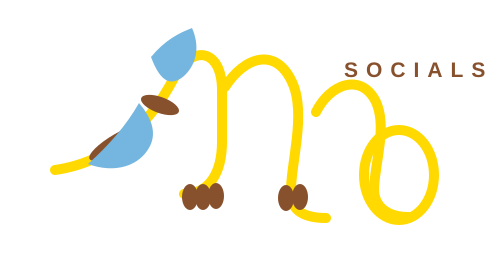

DILLO / CONTENT SERIES
After
hours.
STORY
02
late nights
big ideas
02
late nights
big ideas

Let's work together ↗Social-first creative, branding and digital experiences for brands with something worth saying.
DILLO SOCIALS
BRAND DIRECTION
Dillo Socials is a social-first creative studio helping brands become clearer, bolder and impossible to ignore.
Work with Dillo ↗Strategy, content systems, campaigns and feed design.
Identity, art direction, guidelines and launch kits.
Concepts, motion, photography direction and storytelling.
Landing pages, portfolio sites and digital experiences.